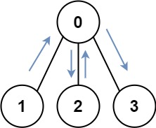
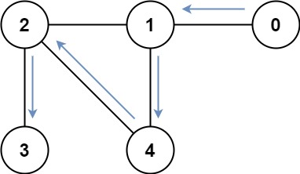

847. 访问所有节点的最短路径
状态压缩 BFS：状态 = (已访问集合 mask, 当前结点)；从每个结点同时出发层序扩展，第一次 mask 全 1 的步数即答案。
思路
- 走的路会重复经过结点，普通「结点已访问」不适用；把访问过的结点集合压成一个 mask，状态
(mask, 结点)定死整条路的信息。 - 每个状态只入队一次（
seen[1<<n][n]）；起点不唯一，把n个(1<<i, i)全部当第 0 层。 - BFS 按层计数：第一次出队时
mask == (1<<n)-1，当前步数就是最短路径长度。
图解
最优解
1import java.util.*;2 3class Solution {4 public int shortestPathLength(int[][] graph) {5 int n = graph.length, full = (1 << n) - 1;6 // 状态 = (已访问集合 mask, 当前结点)；同一状态只入队一次7 boolean[][] seen = new boolean[1 << n][n];8 Queue<int[]> q = new ArrayDeque<>();9 for (int i = 0; i < n; i++) {10 seen[1 << i][i] = true;11 q.add(new int[]{1 << i, i}); // 从任何结点出发都可以12 }13 for (int step = 0; !q.isEmpty(); step++) {14 for (int sz = q.size(); sz > 0; sz--) {15 int[] cur = q.poll();16 if (cur[0] == full) return step; // 第一次凑齐所有结点就是最短17 for (int next : graph[cur[1]]) {18 int nMask = cur[0] | 1 << next;19 if (!seen[nMask][next]) {20 seen[nMask][next] = true;21 q.add(new int[]{nMask, next});22 }23 }24 }25 }26 return 0; // n=1 时第一层就命中 full，到不了这里27 }28}题目
存在一个由 n 个节点组成的无向连通图，图中的节点按从 0 到 n - 1 编号。
给你一个数组 graph 表示这个图。其中，graph[i] 是一个列表，由所有与节点 i 直接相连的节点组成。
返回能够访问所有节点的最短路径的长度。你可以在任一节点开始和停止，也可以多次重访节点，并且可以重用边。
示例 1：

输入：graph = [[1,2,3],[0],[0],[0]] 输出：4 解释：一种可能的路径为 [1,0,2,0,3]
示例 2：

输入：graph = [[1],[0,2,4],[1,3,4],[2],[1,2]] 输出：4 解释：一种可能的路径为 [0,1,4,2,3]
提示：
n == graph.length1 <= n <= 120 <= graph[i].length < ngraph[i]不包含i- 如果
graph[a]包含b，那么graph[b]也包含a - 输入的图总是连通图
题面取自力扣当前版本。
数据快照 2026-11-04。题面版权归力扣所有，本站点仅供本人学习使用，请勿对外发布。